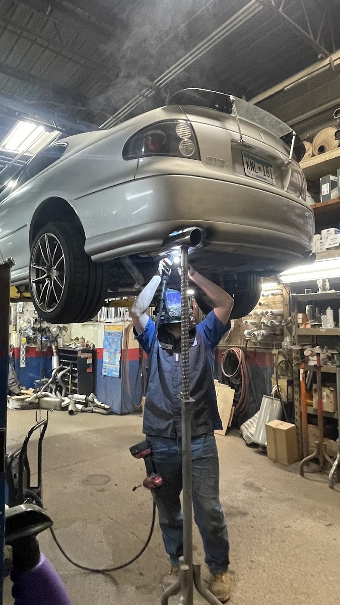

Auto Repair in Shakopee, MN
Auto Repair Shop is a full-service auto repair shop at 100 Scott St N in Shakopee, Minnesota, handling everything from a dashboard warning light to a full custom exhaust build. Whatever's going on with your vehicle, we diagnose it and explain it before we touch a wrench.
Auto Repair in Shakopee You Can Trust
If you're searching for auto repair in Shakopee MN, here's what sets us apart: we tell you exactly what your vehicle needs, and just as importantly, what it doesn't. A dashboard light, a noise you can't quite place, or something that just feels off under the hood all deserve a straight answer, not a shrug and an inflated invoice. Our general repair service is built around a real diagnosis, a plain-language explanation of what we find, and a repair scoped to what your vehicle actually needs — nothing more. Drivers from Shakopee, Prior Lake, and Savage bring us everything from a stubborn check-engine light to major mechanical work, and we treat every one of those calls the same way: carefully, and honestly.
What Our Auto Repair Service Covers
General auto repair covers a lot of ground, and we handle nearly all of it in one shop:
- Check-engine and warning light diagnosis — finding out what triggered the light, not just clearing the code.
- Engine performance issues — rough idle, stalling, hesitation, and loss of power.
- Noise and vibration diagnosis — tracking down exactly where a sound is coming from before recommending any repair.
- Electrical and battery issues — starting problems, dead batteries, and charging system checks.
- Exhaust and muffler repair — from a simple weld to a full custom dual exhaust build, the work our reviews mention most.
- General mechanical repair — the day-to-day issues that come up on any vehicle, at any mileage.
If it's under the hood or underneath your vehicle, it's part of what we check.
Signs You Need Auto Repair
Some problems announce themselves. Others creep in slowly enough that you adjust without noticing. Here's what's worth a call:
- A check-engine or other warning light on the dashboard.
- A rough idle, stalling, or hesitation when you accelerate.
- A new noise — ticking, knocking, whining, or rattling — that wasn't there before.
- Trouble starting, or a battery that seems to be losing its charge faster than it used to.
- A burning smell, visible smoke, or fluid under the vehicle.
- An exhaust note that's suddenly louder, or a rattle from underneath.
None of these are things to wait out. A small issue caught early is almost always a simpler, cheaper fix than the same issue ignored for another few thousand miles.
What to Expect
Appointments are recommended for auto repair so we can get your vehicle on a lift and inspected properly. Tell us what you're noticing — a sound, a light, a smell, a feeling in the wheel — and we'll start there. We diagnose the actual issue, explain what we find in plain language before any work begins, and let you decide what to move forward with. We're not going to recommend a full repair when a smaller fix will do, and we'll tell you when something looks fine, too.
Custom Exhaust & Muffler Fabrication
This is the work our customers keep coming back to talk about. Whether it's welding a customer-supplied muffler and chrome tip onto a Honda, rebuilding the exhaust on a well-loved truck, or fabricating a full custom dual exhaust system from a factory single setup, our fabrication work gets singled out in review after review for clean, precise welds and getting the sound right. One customer described walking through sound options with the owner and having adjustments offered if anything wasn't quite right — that's the same level of care and communication that goes into every repair here, not just exhaust work.
Why Auto Repair Matters More in a Minnesota Winter
Cold starts are hard on a vehicle in ways that don't always show up right away. Sub-zero mornings put extra strain on batteries, belts, and hoses, and a marginal part that was fine in October can fail in January. Road salt used to clear Shakopee streets works into wiring, exhaust systems, and undercarriage components over a season, speeding up corrosion in ways drivers don't always see from the driver's seat. The freeze-thaw cycle every spring throws potholes into local roads that can jolt suspension and exhaust components loose. Taken together, that's why a new noise or a stubborn warning light is worth checking before winter driving conditions arrive, not after you're stranded on a cold morning.

Areas We Serve
We're based at 100 Scott St N in Shakopee (Scott County) and handle auto repair for drivers throughout Shakopee, Prior Lake, Savage, Jordan, and the rest of Scott County, as well as the greater south Twin Cities metro.
Why Drivers Choose Auto Repair Shop
You get a clear, honest answer about what your vehicle needs — and what it doesn't. One longtime customer described getting a $1,500 quote from another shop, bringing the vehicle to us for a second opinion, and being told no work was needed at all. That kind of honesty is why drivers have brought every vehicle they own back to us for years, some for close to a decade. Combine that with the custom exhaust fabrication our reviews rave about, and it's a shop built on straight answers and work done right the first time.
Auto Repair FAQ
A check-engine light can mean anything from a loose gas cap to a more serious engine or emissions issue. Bring it in and we'll diagnose the actual cause instead of just clearing the code, so you know what you're dealing with.
You can get auto repair in Shakopee at Auto Repair Shop, 100 Scott St N, for diagnostics, general repair, and custom exhaust fabrication. We also serve Prior Lake, Savage, Jordan, and the rest of Scott County. Call or text (952) 445-3530.
Call or text (952) 445-3530 and describe what you're noticing, and we'll let you know what a proper diagnosis involves for your specific issue before you bring the vehicle in.
It depends entirely on what's wrong — some repairs, like a muffler weld, are done in under an hour, while others take longer. We'll give you a realistic timeline once we've diagnosed the issue.
Appointments are recommended so we can get your vehicle on a lift and inspected properly, but call or text (952) 445-3530 and we'll always do our best to work in urgent concerns.
We accept credit cards, debit cards, and NFC mobile payments like Apple Pay and Google Pay, so you can pay however's easiest when you pick up your vehicle.
Request a Time That Works for You
Text us the service you need and we'll reply with the next open appointment times. Prefer to talk it through? Give us a call and we'll get you on the schedule.